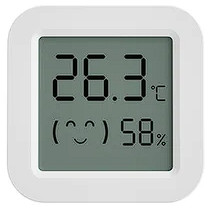
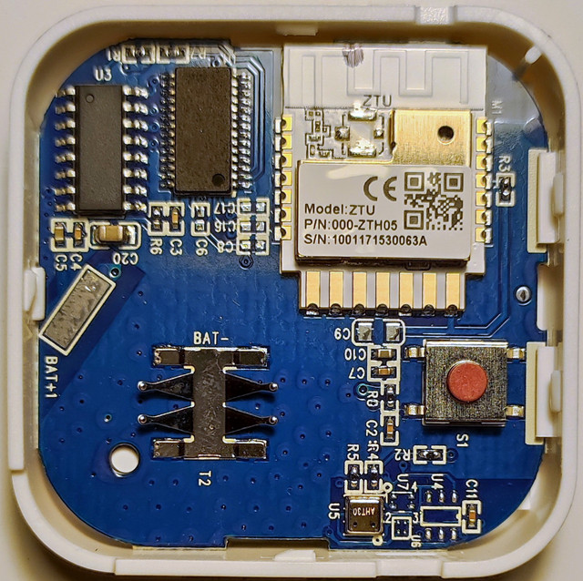
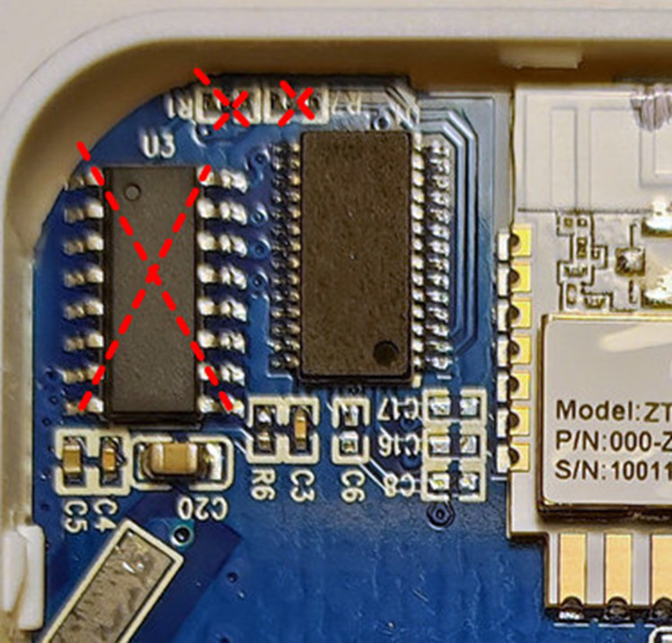
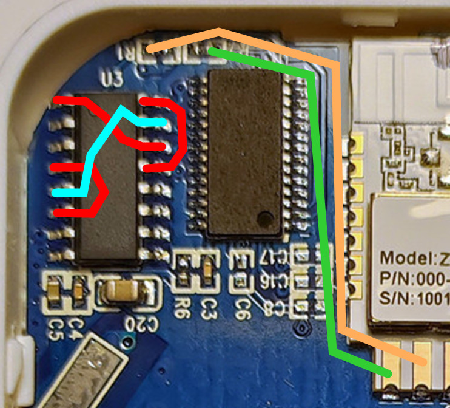

TS0601 (TZE204_upagmta9): Tuya ZigBee ZTH05

Module ZTU, Sensor: AHT30, Chip SO-16 - ?

FullFlash bin
Modification for custom firmware
Custom firmware BLE, Zigbee
1. Remove 3 items: Tuya MCU (U3), 2 x resistors (R1, R2)

2. Install the wires:

Example of modification